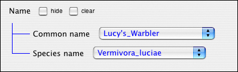
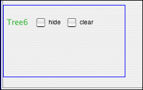
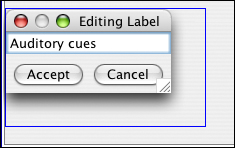
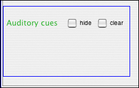
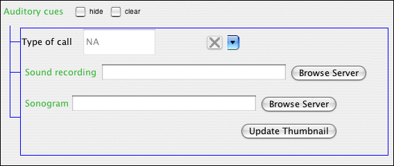
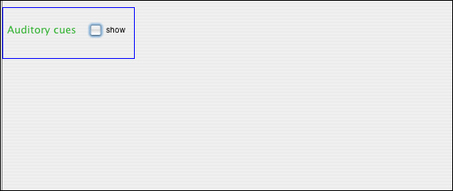

Tree widget
The tree widget is a container widget that can hold other widgets, including more trees. This allows you to build the hierarchy of descriptive elements that best suits your data.Tree widgets can--for temporary visual convenience--be collapsed, so only the name of tree appears on screen. It is important to realize, however, that even when a tree is visually collapsed, all values for all widgets contained within the tree are still saved whenever the user completes a description and clicks the "Save" button.
The checkbox labeled "clear" allows the user to remove all values entered into the widgets contained within the tree. The widgets themselves will remain, but any data they contained will be erased.
Example:

In the Create Form tab, click the tree widget icon in the toolbar.
A new tree widget container appears as an empty box, with a default label.

Double click on the default label to enter an appropriate label.

The tree now has a label, but nothing contained within it.

To nest widgets within the tree, use the toolbar to add whichever widgets you need. The widgets will appear below the tree widget. Double click on their default labels to change their names, and then drag them inside the box outline around the tree widget.
In the example below, we have added a pull-down widget, a URL widget, and an image widget, and dragged all three into the tree called "Auditory cues."

For visual convenience, you can temporarily collapse the tree by clicking the "hide" box just to the right of tree label name. Again, collapsing a tree does not mean any of the contained widgets are deleted.

| Previous page | Return to top of page | Next page |